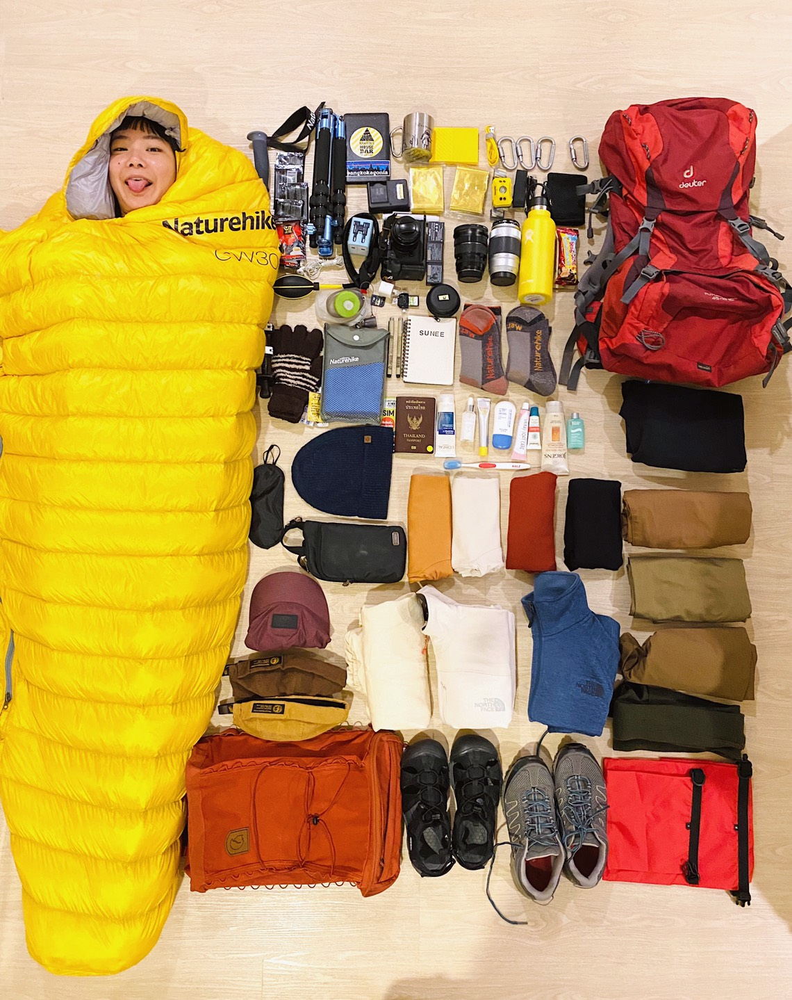
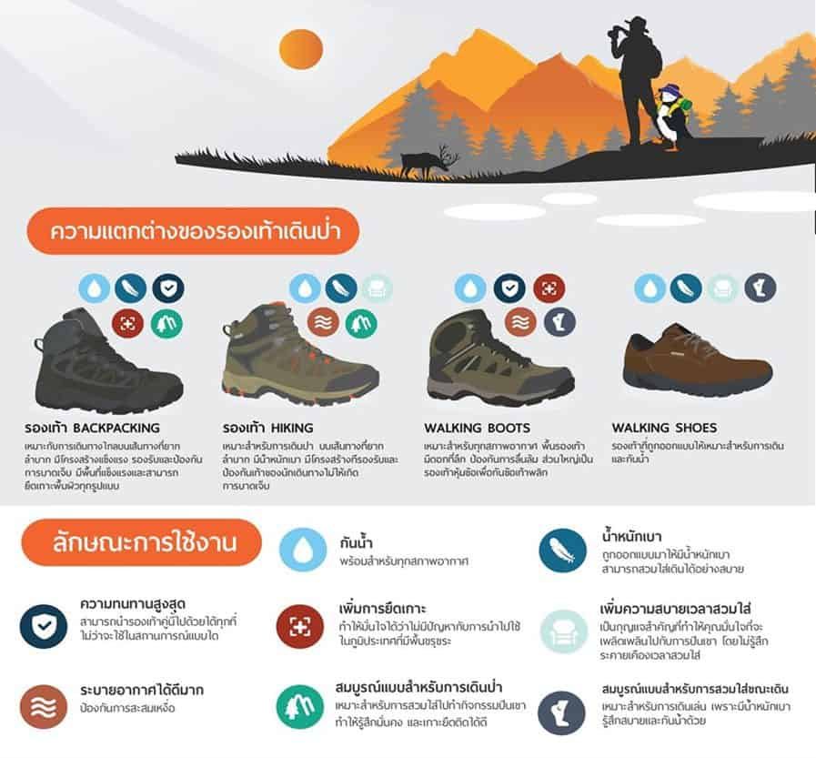
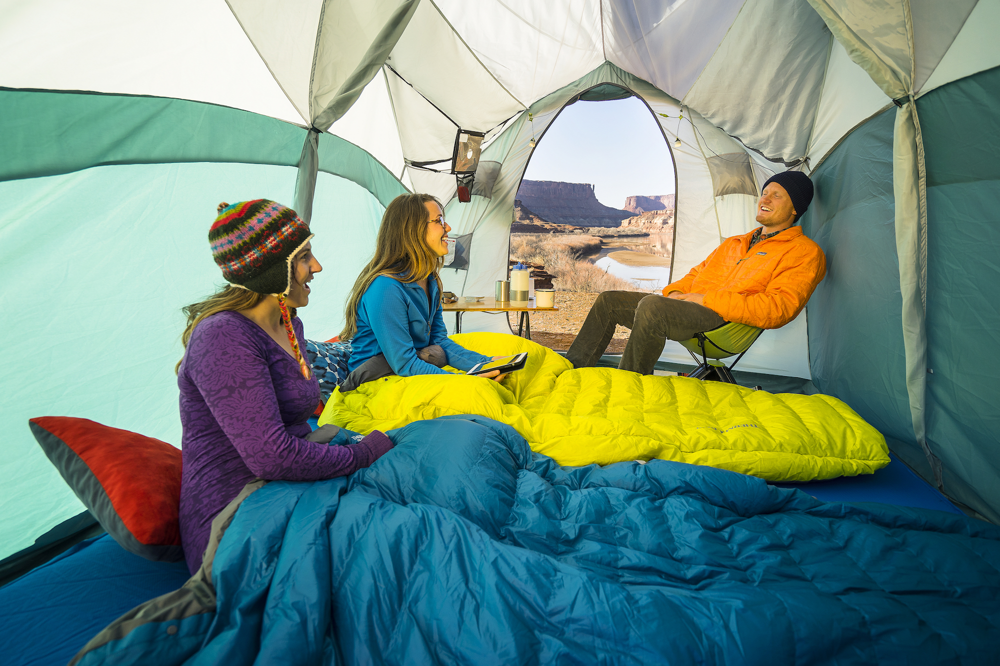
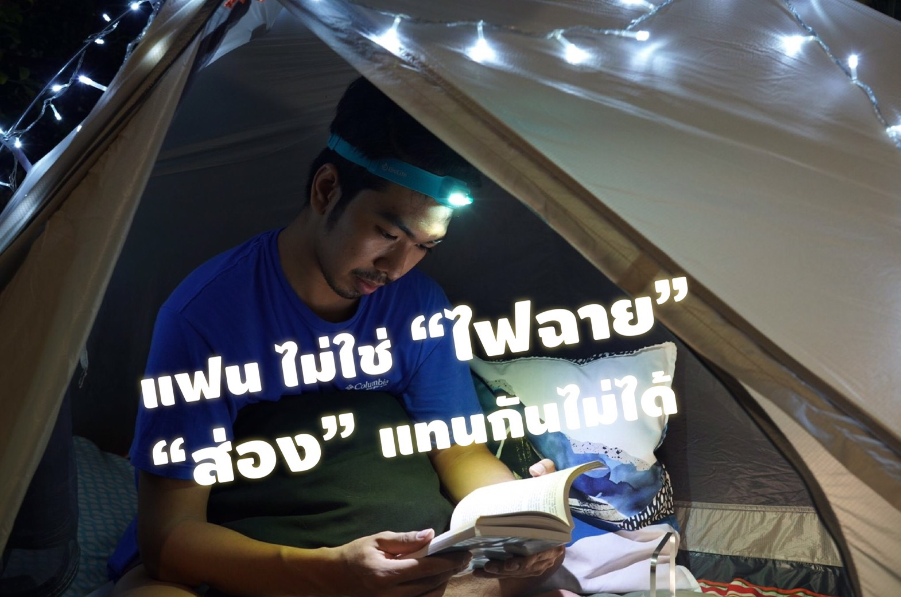

9 อุปกรณ์ที่ต้องมีสำหรับเดินป่า ตั้งแคมป์

1. กระเป๋าเป้เดินทาง
กระเป๋าแบคแพค Backpack ย้ำกว่าต้องเป็นกระเป๋าBackpack หรือออกแบบมาเพื่อการแบกจริงๆเท่านั้น
เพราะว่าหากใช้กระเป๋าที่ไม่ได้ออกแบบมาเพื่อใช้งานนั้นจะทำให้เราบาดเจ็บได้
หากอุปกรณ์เดินป่าเปรียบเป็นรถคันนึง เต็นท์หรือเปลคือตัวรถ
กระเป๋าก็เปรียบเสมือนเบาะรองนั่งที่จะรองรับสรีระคนที่เดินทางให้สบาย ไม่เมื่อยขณะใช้งาน ตามเพศ ระบบหลังตาข่าย
หรือฟองน้ำแตกต่างกันไป
2. เสื้อผ้าเดินป่า
ต่อมาให้คุณเตรียมเสื้อผ้าสำหรับเดินป่า ตั้งแคมป์กันด้วยนะ
เนื่องจากเสื้อผ้าเดินป่าจะออกแบบมาให้มีความยืดหยุ่น ระบายอากาศดีอยู่แล้ว จึงเหมาะสำหรับกิจกรรมในป่ามากกว่า
เราควรเตรียมเสื้อผ้าเดินป่าเเพ็กใส่ในกระเป๋าไว้เลย แล้วที่สำคัญอย่าลืมหยิบเสื้อกันหนาว
เสื้อกันฝนเผื่อไว้ด้วย ป้องกันกรณีเจอลมหนาว ลมฝนระหว่างเดินทางครับ
นอกจากนี้ยังมีเสื้อผ้าที่มีนวัตกรรมกันยุงและกันแมลงด้วย แนะนำต้องลอง!
3. รองเท้าเดินป่า
รองเท้าก็คือช่วงล่างของตัวรถ การเลือกใช้รองเท้าจึงต้องเลือกให้เหมาะสมกับลักษณะเส้นทางที่เราจะใช้งาน
รวมถึงสภาพภูมิอากาศที่เราจะเอาไปลุย นึกภาพรถเก๋งไปลุยทางวิบาก รถก็พังหมด โดย รองเท้าสามารถแบ่งเป็นหมวดใหญ่ๆ
ดังนี้ Hiking Shoes &Trekking , Backpacking Shoes , Sandals

4. เต็นท์เดินป่า
เต็นท์ / เปลมุ้ง ข้อนี้ถือว่าเป็นหนึ่งในอุปกรณ์ที่สำคัญที่สุด รองมาจากอาหาร คงไม่มีใครแบกทั้งเปลและเต็นท์ไป
นึกถึงบริเวณที่นอนว่าสภาพเป็นอย่างไร ถ้านึกไม่ออก ลองคิดว่าถ้าเราเอาเปลไปแต่บริเวณที่เราจะนอนไม่มีต้นไม้เลย
แล้วเราจะผูกเปลอย่างไร?
- เต็นท์ (Tent) เหมาะสำหรับกรณีที่พื้นที่เพียงพอ โดยพิจารณา จากวัสดุ ความกันน้ำ น้ำหนัก จำนวนคน วิธีกาง
อีกทั้งยังให้ความเป็นส่วนตัวมากกกว่าเปล แต่ก็มีข้อจำกัดเรื่องพื้นที่จัดเก็บ อ่านต่อเรื่อง
การเลือกเต็นท์ไปเดินป่าได้ที่นี่
- เปล (Hammock) เหมาะสำหรับใช้ในพื้นที่ที่มีความจำกัด น้ำหนักเบา ประหยัดพื้นที่
(บางยี่ห้อก็ใหญ่กว่าถุงแกงนิดเดียวเองนะ) และจำเป็นจะต้องดูทิศทางลม รวมถึงระยะระหว่างต้นไม้ในการผูกเปล
5. ถุงนอน
เมื่อพูดถึงอุปกรณ์เดินป่า อุปกรณ์ตั้งแคมป์มีอะไรบ้างแล้ว เราจะขาดเครื่องนุงห่มไม่ได้เช่นกัน
ก็เหมือนเวลาเรานอนอยู่บ้านแล้วขาดผ้าห่มไม่ได้ยังไงล่ะ ให้เราลองเลือกถุงนอนที่มีขนาดเล็ก
แต่สามารถให้ความอบอุ่นได้เป็นอย่างดี รวมถึงอุปกรณ์หมอน และผ้าห่มด้วย เพื่อใช้สำหรับการนอน
เชื่อว่าถ้าคนรักป่าจริงจัง จะต้องลงทุนหาถุงนอนดี ๆ อยู่แล้ว หรือจะใช้เป็นแผ่นรองนอนlinerถุงนอน
ต่างๆอ่านต่อที่ลิ้งค์นี้ได้เลย นอนในป่าอย่างไรให้สบายเหมือนเตียงที่บ้าน???

6. อุปกรณ์ให้แสงสว่าง
อย่างที่รู้กันดีว่า เวลาออกป่า หรือไปแคมป์ปิ้ง ส่วนใหญ่มักจะไม่มีไฟฟ้าให้ใช้งานอยู่แล้ว
เราก็จะต้องเตรียมอุปกรณ์ให้แสงสว่างด้วยตัวเอง เช่น ไฟฉายกระบอก ไฟฉายติดหัว หรือไฟฉายห้อยในเต้นท์ เป็นต้น
มันจะช่วยเพิ่มความปลอดภัยทำให้มองเห็นสิ่งต่าง ๆ ที่อยู่รอบบริเวณจุดแคมป์ปิ้งของคุณได้
แต่ทั้งนี้ก็อย่าลืมพกถ่านไฟฉาย และไฟสำรองเผื่อเปลี่ยนกรณีฉุกเฉินด้วยนะ
** แต่ถ้าคุณกังวลว่าจะต้องเปลี่ยนถ่านไฟฉายบ่อย ๆ เเนะนำให้เลือกใช้เป็นไฟกางเต้นท์ ไฟเดินป่า
หรือไฟโซล่าเซลล์จากพลังงานแสงอาทิตย์ครับ จะช่วยหมดปัญหาตรงนี้ได้
7. อุปกรณ์ปฐมพยาบาล
ถือเป็นอุปกรณ์ตั้งแคมป์ที่สำคัญมาก ๆ หากเราบาดเจ็บหรือประสบอุบัติเหตุขณะเดินทาง
อย่างน้อยก็ต้องมีชุดปฐมพยาบาลเอาไว้ใช้ยามฉุกเฉิน เช่น ยาใส่แผล แอลกอฮอล์ล้างแผล ผ้าพันแผล ยาดม ยาหม่อง
ยาคลายกล้ามเนื้อ ยาแก้ปวด ยาแก้ท้องเสีย เทปกาวสำหรับทำแผล สำลี และกระดาษทิชชู เป็นต้น รวมถึงสเปรย์กันยุง
หรือแมลงต่าง ๆ ด้วยนะครับ เนื่องจากในป่าค่อนข้างมียุงเยอะ อันเป็นสาเหตุทำให้เกิดโรคไข้เลือดออก (Dengue
Hemorrhagic Fever-DHF) ตามมา ดังนั้น เราควรเตรียมของเดินป่าให้พร้อมดีกว่า เพื่อความปลอดภัยนั่นเอง
8. มีดพก
เมื่อเราเตรียมของเดินป่า ไปแคมป์ปิ้งทั้งที ก็จะต้องมีอุปกรณ์สำหรับตัดเชือก ตัดกิ่งไม้ หรือทำอาหารด้วยนะครับ
มันเป็นสิ่งของจำเป็นมากๆ สำหรับนักเดินทางในป่า แนะนำให้เราเตรียมมีดพกอย่างน้อย 2 เล่ม ได้แก่ มีดพกเล็กสั้น
และมีดพกด้ามยาว เพื่อนำมาใช้งานต่าง ๆ แล้วที่สำคัญมีดพกจะต้องมีความแข็งแรง ทนทาน และน้ำหนักพอดี
ไม่หนักหรือเบาจนเกินไปด้วย พยายามเลือกมีดพกที่มีปลอกมีดปลอดภัยไว้ก่อนนะ
ป้องกันมีดบาดหรือแทงลำตัวเราจนบาดเจ็บ
9. ไฟแช็ค หรือไม้ขีดไฟ
มาถึงอุปกรณ์จุดไฟกันบ้าง “จะขาดไฟแช็ค หรือไม้ขีดไฟไม่ได้เลย” เนื่องจากในป่าจะไม่มีไฟฟ้าให้อยู่แล้ว
เราจะต้องพกมาเองเพื่อใช้สำหรับก่อไฟทำอาหาร หรือใช้งานประเภทอื่นๆ หากเกิดกรณีฉุกเฉินก่อไฟไม่ติดล่ะ?
แนะนำให้คุณเลือกใช้กิ่งไม้ เปลือกไม้เป็นตัวกลางเชื่อมระหว่างเชื้อจุดไฟกับเชื้อไฟ
มันจะช่วยทำให้ก่อไฟติดง่ายขึ้น
